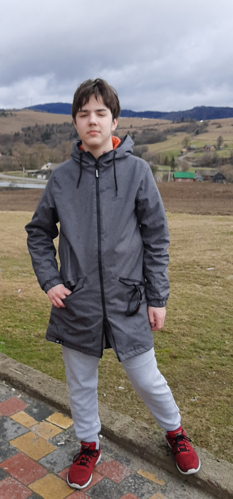

Я Мерзляков Артем, мені 14 років. В листопаді 2022 я разом з родиною переїхав до Київа з міста Краматаорськ Донецької области. Причина нашого переїзду звісно війна. В Краматорську зараз дуже небезпечно, а ще там не можливо ходити до школи та відвідувати будь-які додаткові заняття та спортивні секції для дітей. Київ мені дуже подобається, тут відносно мирне життя. Тут я став замислюватись, ким я хочу
працювати, коли закінчу школу. В мене є старший брат, він програміст. Він каже, що в програмуванні дуже багато напрямків, і треба обрати те, що найбільш цікаво саме мені. Я дуже вдячний можливості, завдяки цим курсам, ознайомитись з напрямком веб-дизайна - це дуже цікаво і корисно. Можливо саме веб-дизайн стане основою моєї майбутньої професії.
